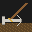

Alt1 Toolkit apps
You can add these apps to your alt1 menu, or open them in the browser if you prefer. The browser versions are not able to pull certain numbers for you from the game, but their main functionality will work.
Tools
Calculators
The calculators are a bit messier due to the large amount of input possibilities, they are correct for my testing, but let me know if something is off
-
